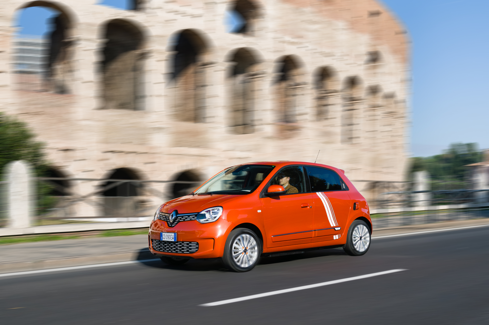
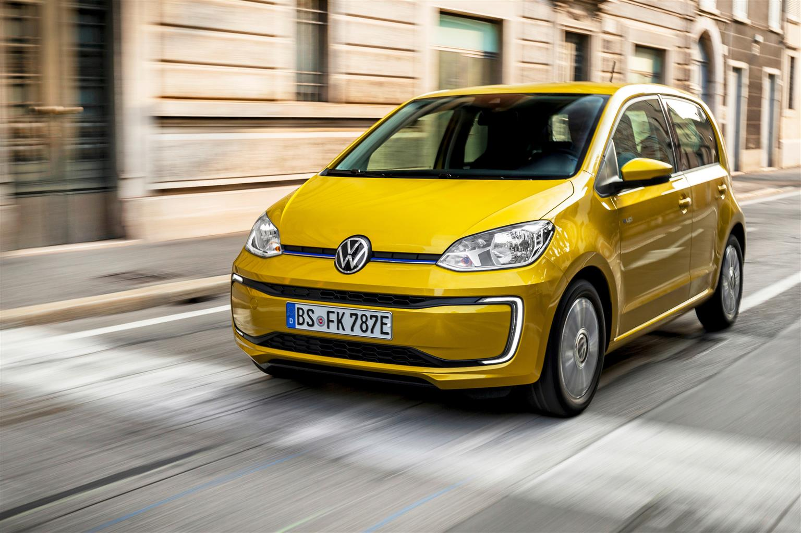

Giuseppe Giaconia
Dacia Spring: 20.650 Euro
E' lei la piu' economica sul mercato, con un listino di 20.650 euro che scende a 9000 circa con gli incentivi. Una vettura tipicamente Dacia, ma abbastanza ricercata nel design, sufficientemente tecnologica e senza fronzoli. Nessuna pretesa, ma la garanzia di muoversi in citta' in modo scattante e leggero, nonostante gli appena 44 CV di potenza del motore, e che pero' dimostrano, con 125 N/m di coppia diretta, che bastano a sfruttare tutte le potenzialita' dell' elettrico. Comoda come seconda auto, come auto per spostarsi tutti i giorni, uscire di sera senza pensieri, la Spring nella nostra prova ci ha convinto molto, e ha anche rivestimenti eco-sostenibili per essere coerente con il suo obiettivo: portare le basse emissioni a tutti.

Renault Twingo Z.E.: 22.750 Euro
Al secondo posto delle auto elettriche economiche 2020 c'e' la piccola Renault Twingo Z.E.! La Twingo Z.E., infatti, entra ancora piu' in sintonia con la citta', grazie alla motorizzazione elettrica che si unisce a un raggio di sterzata eccezionale, perfetto per districarsi negli stretti vicoli delle citta' italiane. Cittadina in tutto e per tutto, anche nell'autonomia, perche' la piccola della casa della losanga ha una autonomia di 180 km.
Smart EQ fortwo: da 25.769 Euro
Al terzo posto nell'elenco delle auto elettriche economiche ci sono le smart: misure compatte, incarnano nel vero senso della parola lo spirito di auto cittadina elettrica. Citiamo allora la fortwo coupe EQ Youngster da 25.769 euro, e ha 132 km di autonomia.

Volkswagen e-Up!: Da 25.850 Euro
Resiste la piccola di casa Wolfsburg, la e-Up! che ormai ha un po' di anni sulle spalle ma rappresenta ancora un'elettrica cittadina di tutto rispetto. Il motore elettrico eroga 83 CV di potenza, ed e' abbinato a una batteria da 37 kWh per un'autonomia dichiarata di 180 km su ciclo WLTP.
Fiat 500 elettrica da 27.000 Euro
Fin dalla sua presentazione nel 2020, la 500 elettrica ha fatto molto parlare di se'. Disponibile in piu' allestimenti, la piu' cittadina di tutte, la Action, ha un prezzo molto accattivante, destinato a scendere ulteriormente con gli incentivi. L'autonomia e' di 185 km. Le versioni piu' ricche, che aumentano l'autonomia a 320 km, invece, hanno prezzi superiori, fino alla "Prima" che costa circa 37.000 euro. Noi abbiamo provato (e comprato) la Icon: ecco come e' andata!